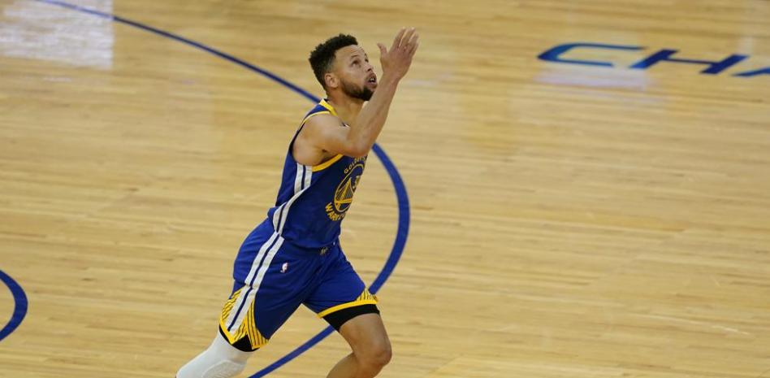
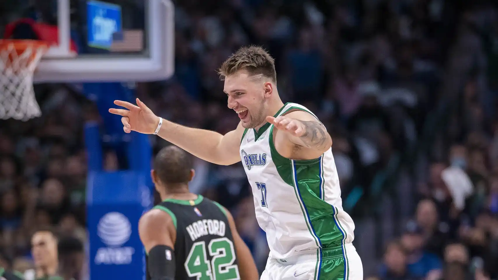

The greatness of being called Steph Curry, the greatest shooter of all time.
The point guard of the Golden State Warriors is the leading scorer in the history of the franchise, but his impact on the game goes far beyond the titles, awards and accumulated records.
Several NBA legends believe that the '30' is already, by now, the best shooter of all time
New batches of players come to the league dreaming of mastering the art of shooting, where the power of contemporary basketball is concentrated.
Some people doubt the place that Stephen Curry will occupy when he finishes his vital journey in the NBA. Legends like Reggie Miller, Dirk Nowitzki, Jerry West, Patrick Ewing or Tracy McGrady are not: for them he is already the best shooter of all time ... and much more than that.
The 33-year-old point guard is the main stronghold of a type of player that is in short supply in the era of super-teams made up of constellations of stars in the American league, the one-team player.
It is true that Curry has been made easy by a good sports management of the Golden State Warriors, who joined him with Kevin Durant and had a very good eye with Klay Thompson and Draymond Green to build a team that has reaped three titles in the last five years (2015, 2017 and 2018) under the perennial leadership of '30'. Having a coach like Steve Kerr, one of the smartest, most media and innovative strategists of recent times has also made Curry the infallible point-scoring weapon that he is today.
This week, Don Stephen became the Warriors' leading scorer, a milestone that put him above Wilt Chamberlain himself, the guy who appears the most in NBA history books. For many, that fact already makes Steph the best player in Golden State history. "Look, he's Mr. Warrior," Reggie Miller, another famous single-team player, baptizes him in statements to ESPN.
Miller, who knows his stuff about shooting and amassed 25,279 points in his career, goes further: "He is the best shooter of all time, he has taken shooting to a new dimension." That is Curry's great legacy according to various league legends, his influence on contemporary basketball played today in the United States and, therefore, around the world.
“Steph is a lot like Wilt, Shaq, Jordan or Iverson. They have changed things, they have changed how basketball is perceived and played ”, concludes the former Indiana Pacers player. They agree with him, too, two other giants like Jerry West and Dirk Nowitzki. "I think he is probably number one, yes," corroborates the German.

The best 3-point shooter
Luka Doncic's latest madness in the NBA: basket against Boston Celtics to silence criticism
El esloveno sacó un triplazo sobre la bocina para tumbar a Boston Celtics. Luka Doncic, tras un inicio dubitativo, ya está de vuelta.
The Dallas Mavericks beat the Boston Celtics in a game decided by Luka Doncic. The Slovenian was again fundamental, although this time he left everything for the last seconds of the match. A triplazo from the former Real Madrid tipped the balance for the local team. Doncic continues unstoppable and silences the criticism of this start of the season.
The game marched with a tie at 104. The Mavs were left with the last possession and it was Luka Doncic who decided to carry the ball. The play was clear, or so the Dallas players seemed to indicate. Doncic crossed the middle of the track, a block facilitated the defensive change and the Slovenian heeled slightly in search of gain in speed. Three defenders, both his initial and the subsequent change, launched to try to block without great consequence.
Josh Richardson could not do more than observe how Doncic, in just 10 seconds of play, had managed to avoid three blocks and score the triple of the victory. He, calm, received the ovation of his companions after the play made.

The promise to be the best player
Giannis Antetokounmpo wins his second consecutive MVP
The Greek star, who is in his country after the end of the season, does not want to be called MVP until he has his Ring
At the collective level, Giannis Antetokounmpo has not been good at all, who has been eliminated in the first exchange because he could not lead the Milwaukee Bucks to the comeback against the Miami Heat. However, the Greek has managed to win his second MVP and also the award for the best defender in the entire NBA. Only two giants like Michael Jordan and Hakeem Olajuwon have achieved this feat in all of history.
However, despite Antetokounmpo, he does not want anyone to consider him the best player until he obtains the long-awaited Champion's Ring. Maybe next season.
Giannis Antetokounmpo has rewritten his name in basketball history after revalidating his MVP title, awarded to the best player of the regular season. Fortunately, the Milwaukee Bucks' hit in the second round of the playoffs against the Heat has not influenced the decision of the voters and they have allowed him to achieve an award in a historic year for 'Anteto'.
The Greek has been the undisputed leader of the Bucks who were the champions in the Eastern Conference regular season, with a record of 57 wins and 17 losses. He averaging a double-double per game with 29.5 points and 13.6 rebounds, plus 5.6 assists each game, improving virtually all of his records from last season.
'The Greek Freak' has become the third player in history to achieve MVP and DPOY (Defensive Player of the Year) after two other NBA legends: Michael Jordan and Hakeem Olajuwon. He also joins a select club of players who have repeated MVPs consecutively, along with Tim Duncan (2002 and 2003), Steve Nash (2005 and 2006), LeBron James (2009 and 2010, 2012 and 2013) and Stephen Curry ( 2015 and 2016).